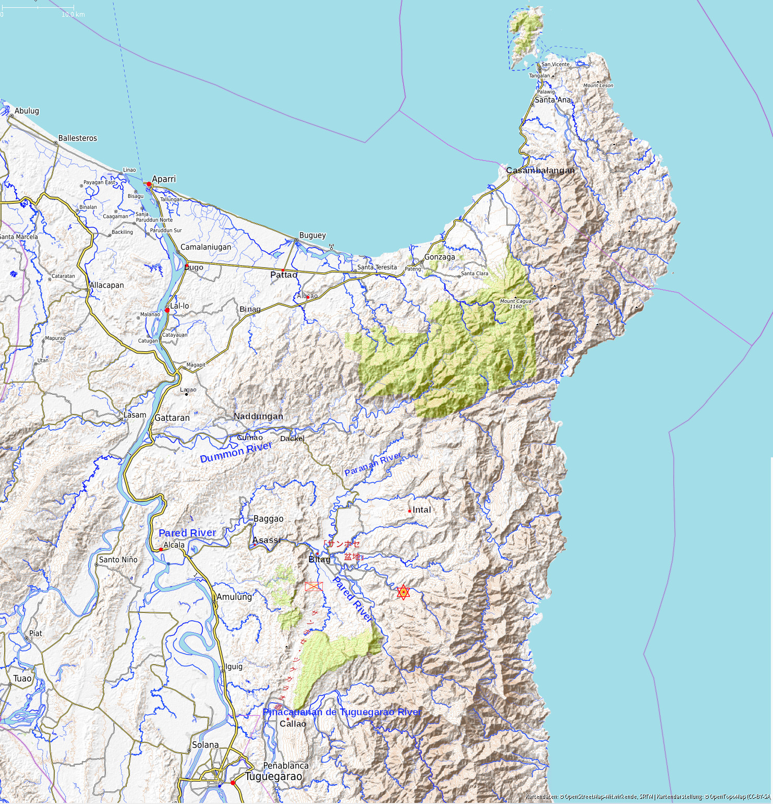

761: 'ルソン島「日の果て」の戦場' 事件¶
依頼人¶
40代女性。この一年、祖父がたびたび入院しているのだが、高齢で手術も勧められない。毎回、今度が最後かと思う。
依頼内容¶
祖父から田舎の古い戸籍謄本を見せられた。祖父の兄の戦死した場所がいまだに分からない、それが心残りだと言っている。祖父は事情があって長く親兄弟と断絶していたので、兄の軍歴も、戦死の状況も知らない。貧しい家のごく短かった少年期に、この兄に優しくしてもらった記憶があって、懐かしさが募ってきたらしい。祖父の妹によると、兄は爆弾で吹き飛ばされたという話を聞いたという。それもそんなにはっきりした話ではない。
調査報告¶
目次

これが戸籍謄本の記載である。
昭和弐拾年四月二十日時刻不詳比島ルソン島アブラ州カウテツト方面ニ於テ戦死
昭和弐拾弐年参月弐拾五日○ ○ 地方世話部長○ ○ ○ ○ 報告仝月弐拾九日送付
地方世話部 というのは、陸軍軍人軍屬とその家族等に関する事務をあつかった組織である。昭和20年12月にできたが、22年地方自治法施行とともに廃止された。死亡告知書は地方世話部長名 1 で送られて来て、そこには、本籍、死亡時の官等級、氏名に続いて、こんな文面があったはずである：「右昭和弐拾年四月二十日時刻不詳比島ルソン島アブラ州カウテツト方面ニ於テ戦死セラレ候條此段通知候也」。
戦時中に届けられた戦死公報では「比島方面に於て戦死」としかないものもあったという 2 から、これでもかなり情報量が多いほうだと言うべきか。当時の通知にはルソンとレイテとを混同していたり、地名に誤記があったりというのは珍しくなかったようである。フィリピンの地名表記も記録によってまちまちであり、そのうえ当時とは現地の地名も変わっていたりする。死亡告知の地名からその場所を特定しようとすると、はなはだ判然としない。
- 1
地方世話部廃止後は県知事名で送られた。
- 2
「私の戦争はまだ終らない」、三重県戦争資料館、<https://www.pref.mie.lg.jp/FUKUSHI/heiwa/17459018283.htm>
戦死、戦病死¶
死亡告知には、戦病死と認められれば「戦病死」と書かれたはずなので、今の場合「戦死」は確かなのだろう。ルソン島北部では、昭和20年4月末なら、まだ、「戦死」と「戦病死」の区別くらいはつき、死亡日時、場所もあるていどまで同定できたのかもしれない。
ルソン戦について、戦後まとめられた作戦記録類は参謀将校たちのメモや記憶にたよっている。しかし、仮にそれらの記録が正確だったとしても、司令部と前線との交信がほとんど途絶あるいは大きな時間遅れがあったために、参謀たちが認識した各部隊の状況と実際とは大きなずれができた。
四月下旬の状況
一、バギオの失陥
「バギオ」方面の状況は愈ゝ急迫し二十四日朝敵は突然戦車を以て「バギオ」
西北側地区より市内に突入し来れり之を撃破する如く各種の処置を講じ一度
之を撃退せるも軍司令部移動後の市内の戦況は遂に之を保持するを得す「バ
ギオ」を放棄するの止むを得さるに到れり而して「トリンダッド」北側の橋
梁は砲爆撃に依り破壊せられ加ふるに降雨に依り道路は泥濘化し「バギオ」
ー「トリンダッド」ー二十一粁道及其の東側の新築道の利用困難にして軍隊
の撤退は概ね順調に実施せられたるも患者及軍需品の輸送は困難を極め為に
患者等も行方不明者を多数生するに到り惨憺たる状況を呈するに到れり
(比島作戦記録 第三期第三巻 呂宋島に於ける作戦 昭和２１年１０月調製、
昭和２４年５月複製 第一復員局)
・・・本作戦記録にある基礎資料は元将校によって作製せられたものである。
此等元将校は作戦間大兵団内の指揮に当り或は参謀系統に属したものである。
ここで注意を喚起するの要ある点は空爆と火災による厖大な破壊のため東京
記録は失われ資料の大半は記憶により再編集せられたことである。
・・・
本篇は元大本営参謀陸軍少佐岩野正隆及元第十四方面軍兵站参謀長大佐青島
良一が記憶及私的備忘録等を基礎にして起案し更に第十四方面軍の一部の参
謀等の協力を得て所要の補修を施せるものとす
昭和十九年十月五日、山下
{kind=link}
ルソン島北部地図。¶
レイテ島は十二月末に陥落した。ルソン島では昭和二十年一月リンガエン湾から米軍上陸、ニ月にはすでに島中央の平野部と主要道路は米比軍に抑えられ、三月にはマニラが奪還された。
第14方面軍は昭和二十年一月以来、マニラから北に250km、標高1,500mの高地にあった夏都バギオに司令部を置いていた。 「複郭」(最終防護線）を「プログ(Pulog)山を中心とするバギオ(Baguio)-ボントック(Bontoc)-バンバン(Bambang)三角」 とした。が、糧食源のカガヤン(Cagayan)谷方面とバギオとのつながりをどう確保するかが問題だった。そのため、十九年末から、もとは馬車もやっとというような間道だったアリタオーカヤパートリンダッド北二十一キロ(21K)地点をむすぶ道(いわゆるカヤパ道)の自動車道化を急いだ。
カヤパ道はようやく二十年四月中旬に貫通した。バギオに米軍がせまるなか、第14方面軍司令部はこの道を通ってバギオからバンバンに退避したのである。といっても、道は山腹、山上を通り、降雨があれば泥濘化した。米機に見つからないよう、行動は夜間に限られた。かつ、燃料不足によって、輸送対象も限定された。軍司令部は十七日夜バギオを出発し、自動車により十九日朝にバンバンに到着した。
上の記事はその後、バギオがついに失陥したときの混乱を記したものである。「患者等も行方不明者を多数生するに到り惨憺たる状況」の実態は、動けない傷病兵は自死、あるいは軍の手で殺され、動ける者たちは自力で山道をたどりながら、米機から身を隠すだけの力もなく殺される、という惨状である 3 。
歩兵とは銃器、弾薬と同様に損耗、補充されるべき数である。その損耗数が記録、把握されている限りは、敗軍もまだ軍の形を保っている。その意味で、ルソン島ではバギオ失陥頃より後の方面軍はすでに軍の形をほとんど失っていた。
- 3
バギオ失陥の模様、そのなかでの兵士たちの苦難、カヤパ道の惨状は、「戦争とたたかう - 憲法学者・久田栄正のルソン戦体験」(水島朝穂、岩波現代文庫)に詳しい。
梅崎春生「日の果て」の地名¶
五月末旅団はついにアパリを見捨てた。カガヤン渓谷を南下して苦難に満ちた行軍を
続け、北の入口からサンホセ盆地に入ろうとした
リンガエン上陸の米軍の一支隊は疾風のような早さでカガヤン渓谷を逆に北上、旅団
の最後尾に猛烈な砲撃を加えて来た
北上する米軍を食い止める為に二箇大隊の将兵が急行し、カガヤン渓谷上流のオリオ
ン峠に陣を張っている筈であった。北入口で米軍の砲撃を受けたということは、オリ
オン峠の二箇大隊が全滅したということに外ならない。
炸裂の破片は、花田中尉の当番兵を即死させ、余勢をかって花田中尉の脚を傷つけた
のだ。道路にあふれる死屍と傷兵を見捨て花田中尉は住民の女の肩につかまり、東方
に向け戦場を離脱し密林を抜け、インタアル付近の小部落に落ち延びたと言う。
宇治たちの大隊は盆地を横断し、盆地の南入口付近の密林中に行嚢を解き、仮小屋や
鐘乳洞に分散、専らツゲガラオ飛行場に対する遊撃戦を待機していた。
北入口から逃れて来た傷兵やインタアル付近に居る海軍部隊の報告を綜合すると、花
田中尉の行動は自ら明かとなって来た。
(梅崎春生、「日の果て」、 1947年(昭和22年)9月初出、から抜粋)
梅崎春生の「日の果て」について、Wikipedia記事は、「フィリピンのルソン島の戦いを舞台にした作品として紹介されたが、実際は『サンホセ盆地』という地名がでてくることから、同じフィリピンのミンドロ島の戦いを背景としている作品である。」としている。こんな誤解が生じるのも、フィリピンには「サンホセ(San Jose)」に限らず同一地名が各所にあるためである 4 。(ルソン島で一番有名なサンホセは5号道のマニラからカガヤン河谷に抜ける途中、 バレテ峠 の手前の交通の要衝である。)
ルソン島日本軍にとっての「サンホセ盆地」は、北海岸のアパリ(Aparri)から南に走る当時の5号線をアルカラ(Alcala)付近で東に折れた先にある。山また山のルソン北部、主要道は川ぞいに走る。5号線はカガヤン河に沿っている。アルカラ付近で東からカガヤン河に流れ込んでいるのがパレド(Pared)川(パレット川)、その川沿いの道をさかのぼるとバガオ(Baggao)の集落がある。その奥、南北を山にはさまれたビタグ(Bitag)の隘路 [mitsuold] を抜けると視界が開けて、農地が広がる。そのあたりを日本軍は「サンホセ盆地」と呼んでいた。現在も盆地の入口にSan Joseという地名がある。南北に隘路しかもたない「陸の孤島」であり、比較的食料も豊富で、ルソン北端の部隊の逃げこむ先としては最適だった。
 サンホセ盆地の南はツゲガラオ川(Pinacauanan de Tuguegarao River)に画され、東にはシェラマドレの山脈が南北につらなる。盆地の北に接して「パラナン(Paranan)川」とその支流からなる渓谷がある。パラナン川の北に「ドモン(Dummon)川」(トウムムン川)があり、この二つの川とそれらの支流がなす渓谷に無数の小集落があった。そこが本隊からはぐれた日本兵たちが分散、潜伏するところとなった。また、バギオ方面から逃げて来た報道関係などの民間人もこのあたりにたどり着き、隠れていた。
{kind=link}
脱走兵の花田中尉が逃げていったのは、盆地北東端のインタアル(Intal)付近である。そこからは東海岸に抜ける山道があった。逃亡兵たちは、戦火がとどかず、食料がありそうな東海岸にあこがれた。
「日の果て」の事件は第103師団(駿兵団)の湯口支隊の行動を背景として設定されている。
- 4
なお、フィリピンの地名表記は安定せず、最新のものでも見る地図によって随分ちがう。当時は集落の名前であったものが現在は行政区の名前になって、地図上での位置もそれによって移動していたり、英語表記も変遷しているので、いくつもの地図を見比べる必要がある。年月のあいだに地図から消えてしまった集落もある。地名表記も地図、戦史、日誌、手記でまちまちである。
第103師団(駿兵団)¶
駿兵団はルソン島北端の守備を担い、アパリより少し南のラロ(Lal-lo)付近に司令部を置いていた。駿兵団のもともとの任務は北および北西海岸の守備と、カガヤン(Cagayan)谷の確保だった。カガヤン(Cagayan)谷は北端のアパリから駿兵団守備範囲南端のイラガン(Ilagan)までとしても南北の路程約180km、また、島の北西部も含めた駿兵団の全守備地域は面積にして、青森県と秋田県を足したほどの広さだった。
山下将軍は沖縄戦との関係でアパリ地区を米軍に渡さないことを重視していた。しかし、三月末にはすでに沖縄に大規模な空襲があり、また、ルソンでは米軍が南部から複郭に攻め上がって来ていた。そのため、北海岸守備よりもカガヤン谷から複郭への供給路維持が優先となった。四月末、駿兵団主力に南下するよう指示が出た。比島作戦記録 [hitou2], [hitou3], [rep103] 等によると、昭和20年5月〜6月の駿兵団主力の行動は下記のようである。
5月 1日 駿兵団村上師団長は師団主力に南下を発令。
5月16日 村上師団長は2個歩兵大隊(一瀬大隊、山下大隊)を率いてオリオン峠方面に向けて
南下。湯口支隊は残る1個歩兵大隊(有薗大隊)と急ごしらえの集成大隊1個を
もって、いわば囮としてラロ地区陣地を保持。湯口支隊長下のもう1個の
歩兵大隊(坂巻大隊)は飛行場のあるツゲガラオ(Tuguegarao)に配置。
5月24日 村上師団長はカウアヤン(Cauayan)到着。しかし、部隊は車も軍馬もなく、
「はるか後方を長遠な縦長で南下」中。「重装備の将兵は泥濘の中をよろけ
つつ」歩いた。
6月 6日 村上師団長、オリオン(Oriung)峠守備の命令を受け取る。
6月 9日 第14方面軍参謀たちの予想より半月以上早く、米軍がカガヤン谷と複郭との接点
バガバッグ(Bagabag)に侵入。
6月11日 一瀬大隊(2個中隊にすぎず）、山下大隊(1個中隊+銃砲隊一部程度)は、米軍先頭
部隊とオリオン峠で遭遇。３日間にわたる激しい戦闘。
6月14日 オリオン峠失陥。一瀬大隊壊滅。米軍のエチアゲ(Echiague)侵入。サンチャゴ
(Santiago)にいた駿兵団司令部と残存部隊は北西方面に逃げて、7月下旬に
ようやくバナウエ(Banaue)東方山地にたどりついた。そのとき、約200名を残す
のみとなっていた。)
6月17-20日 湯口支隊はラロ陣地撤収。アパリ残留部隊にも撤収命令。
6月21日 米比ゲリラ軍、アパリ確保。
6月23日 湯口支隊は5号道を避けて間道をたどり、バガオ(Baggao)に集結後、サンホセ盆地
奥を目指す。米空挺部隊がアパリの南に降りる。
6月24日 オリオン峠を破った米軍はツゲガラオ(Tuguegarao)に進出。また、バガオを砲撃
する。坂巻大隊、ツゲガラオを放棄し、サンホセ盆地方向に撤退。
6月26日 米軍、南北両方から5号道路全域をほぼ制圧。
駿兵団には、のちに評論家となる山本七平が砲兵隊少尉として、アパリにしんがりとなった砲兵部隊集成中隊に属していた [sitihei] 。いよいよ撤収命令を受けて「転進」の途中、バガオ(Baggao)集落あたりで米軍の銃撃にあう。その銃撃下、サンホセ盆地にむかって塩を運んできた老兵たちと出くわす。サンホセ盆地には稲籾はあっても塩がなかったので、老兵たちは命じられて銃も持たずに塩を担いで、バガオまで戻ってきたところだった。「籾」と「塩」とはサンホセ盆地のキーワードである。「日の果て」の主人公宇治の属する部隊は塩の欠乏に苦しんでいた。
久し振りに舐める塩は、ふしぎなことには甘い味がした
日本軍は昭和十七年(1942)五月からフィリピンを占領していた。にもかかわらず、昭和十九年十二月第十四方面軍参謀副長としてルソンに呼び寄せられた 小沼少将 は、司令部に20万分の１より詳しい地図がないことに驚いたという( ルソン島地図 - 日本軍の地図、米軍の地図 )。ルソン各地の部隊も自身の陣地周囲の外については、せいぜい米軍の古い地形図しか持たず、それらの地図も空白域を多く残していた。また、部隊からはぐれてしまうと密林の中を川の流れをたよりにさまようほかなかった。密林では川の上にしか空がないのだった。
荒木兵団の転戦¶
第103師団(駿兵団)には荒木正二中将の率いる荒木旅団(三月からは、14方面軍直轄の「荒木兵団」)が、前年十二月以来、ルソン島北西部のラオアグ(Laoag)、ビガン(Vigan)近くの飛行場や港を守っていた。しかし、二月十日には米比軍第121連隊(USAFIP-NL121)に海側の南から、さらに、三月からは米比軍第15連隊(USAFIP-NL15)によって東北方面から攻め立てられ、タンガド峠(Tangadan Pass)付近に立てこもった。「この間までゲリラと称して討伐した相手」によって「逆に討伐されるゲリラに転落した」 [kusamusu13] 形勢となっていた。
USAFIP-NLはルソン島北西部を根拠とした米比ゲリラ軍である。1942年米軍撤退直後から、マッカーサーの指示を受け、あるいは、自発的に残留した米兵たちはフィリピン各所でそれぞれにゲリラ部隊を組織してきた。これらゲリラ部隊はみな1944年夏頃には連合国南西太平洋地域総司令部(SWPA: South West Pacific Area)と緊密な連絡をとり、日本軍各部隊の構成・配置を伝えるとともに、指示を受けて日本軍の連絡・兵站を撹乱した [jerry14] 。そして、米軍が一月にリンガエン湾に上陸するや、USAFIP-NLは公式に米第6軍の部隊として組み込まれた。
USAFIP-NLは米軍から装備、弾薬の供給を受けていたが、日本軍から
この頃、ルソンの師団、旅団は、それぞれ磯だまりのように各地域の敗残兵を集めて雑多な混成状態となり、それがまた米比軍による連絡経路の寸断を受けて、指揮系統の実態はほとんどわけの分からない状況になっていた。
荒木兵団も、四、五月ころには、みかけ2個の歩兵大隊、機関砲隊、機関銃隊、あとは建設部隊、通信兵、報道員、農作業隊等々の寄せ集め臨時歩兵大隊といった中身だった。荒木兵団には朝鮮人、台湾人も少なくなく、彼らは武器もほとんど携行していなかった。
荒木兵団の総勢は約3,000だったが、北西ルソンには他にも海軍部隊(ラオアグ地区に約1,000名 [jnav] )などの日本兵が他にも5,000名ほどいたという。14方面軍司令部の把握していたところでは荒木旅団(兵団)の動線は次のようになっている。
2月10日以降状況: 荒木旅団は西南から米比軍の攻撃を受ける。
2月22日方針: 荒木旅団長指揮の杉木(176ibs)、松原(178ibs)大隊はビガン方面を確保。
2月25日発令: 第103師団は荒木旅団に、（１）担任地域の治安維持、わが作戦基盤撹乱
の企図を封殺、（２）米正規軍の上陸にあたっては、ビガン、ラオアグ
方面からの進攻を予期してアブラ河谷を確保、等。
3月10日以降状況: 荒木旅団は東北からも米比軍の攻撃を受け始める。敵兵力5,000名。
3月16日発令: 荒木旅団を第103師団指揮下から除き、14方面軍直卒の「荒木兵団」とす
る。
4月19日発令: 荒木兵団はタンガドからアブラ河谷経由セルバンテス付近に後退すべし。
4月25日頃 二縦隊でアブラ河谷を南下し、5月上旬セルバンテス地区に到着。
5月5日北部呂宋作戦指導要領、兵団の任務及行動:
荒木兵団 「セルバンテス」ニ集結セハ成ルヘク速カニ「バナウエ」周辺
地区ニ転進シ同地付近ノ討伐ヲ実施ス
しかし、米軍の記録するところでは、 荒木兵団の後退経路は随分違っている [cmhpub5] 。
三月時点で、荒木兵団に期待されたのは、穀物生産力のあるアブラ河谷をなんとか確保することだった。しかし、四月半ばにはビガン南北の海沿いの道はUSAFIP-NLによって塞がれてしまった。また、三月中旬に第14方面軍直轄になったとはいえ、司令部との通信はほとんど途絶えていた。四月十日、USAFIP-NL15部隊が荒木兵団への攻撃を開始、同十五日、荒木兵団はアブラ谷方面に後退しはじめた。すなわち、十九日の司令部からの後退発令というのは、おそらく単に事実認定にすぎなかった。
荒木兵団はアブラ河谷をセルバンテス方面に南下しようとした。しかし、すでにUSAFIP-NL部隊が谷の南側からも進んできていた。やむなく、兵団はガヤマン(Gayaman)付近で東にアブラ河を越え、密林のなかを逃げて、飢餓と病気により多くの兵を失った。米側の記録では、兵団がようやくボントック西10キロほどのベサオ(Besao)にたどりついたのは五月半ばだという。アブラ右岸のTuboからBesaoの間は密林に覆われた山また山で、いったいどのようにたどったものだろうか。
五月末、ボントックに再集結できた荒木兵団はほぼ半数の1,500名ほどにすぎなかった。司令部の認識していた「二縦隊でアブラ河谷を南下し、5月上旬セルバンテス地区に到着」というのとはずいぶん違っていたことになる。
{kind=link}
荒木兵団「転進」ルート(標高は ft 単位)。タンガド(Tangadan)からカウテット(Cautit)高地山腹を経由して、山道をセルバンテス(Cerbantes)に向かった。ガヤマン(Gayaman)付近でアブラ河を渡り、五月半ばにようやくベサオ(Besao)につき、ボントック(Bontoc)で第14方面軍司令部との連絡をつなぐことができた。 カウテット(Cautit)高地で兵団の通過を援護した殿隊の到着を荒木兵団長が待ち受けていたという中継地点「530米高地」はカウテットからほんの数km南に行ったところにある。 (なお、戦史にたびたび出るルソン島北西の「ラボック湾」は"Lapog Bay"である [heiwa215] 。戦前戦中のフィリピン地名表記では半濁音-濁音、濁音-清音が入れ替わる例が少なくない。)¶
荒木兵団の行動経路( 兵用地誌図 )は、戦後昭和二十一年末に作られた「第十四方面軍(比島方面)各兵団行動概要要図」 [act14] では米軍側の記録とおおむね一致したものになっている。また、兵団の一兵士の戦後手記では、アブラ河左岸の岩壁の獣道を南下し、河を渡ってボントック方面にぬけたことが記されていて、これも上記経路と一致する [gokousei] 。
四月時点でバンゲットより北に残存していた荒木兵団もふくめて総勢8,000名ほどの日本兵のうち、4,000名があるいは殺されあるいは餓死・病死し、2,500名は密林を逃げまどうなかでゲリラに捕らえられたり、餓死、病死したものと米国の戦史家は推定している [cmhpub5] 。
カウテット¶
カウテットの地名はルソン戦の作戦記録類にも荒木兵団の行動概要にも出てこない。そんな無名の戦場は数限りなくあったろう。調べているうちに、九段の昭和館で荒木兵団機関砲中隊の田中隊長の戦後の手記「カウテット高地の戦い」 [kusamusu13] を見つけた。
荒木兵団の拠ったタンガド(Tangadan, Tangadon)峠付近は古くは1899年12月、フィリピン-アメリカ戦争において、アブラ河谷を守ろうとする比軍と米軍との戦闘が記録されている場所である。タンガド峠は西海岸からバンゲット(Bangued)平野、アブラ河谷につながる道を扼する地点となっていた。それだけに、正面の海岸線と背後のバンゲットーピラル間の道をおさえられてしまうと、山中に逃げこむほかなくなってしまうのだった。
四月十五日、荒木兵団はアブラ河谷方面に後退しはじめ、タンガド峠を出て、まずピラル(Pilar)をめざした。しかし、バンゲットーピラル道はすでに米比軍に遮られ、脱出路は「カウテット山」腹を通る山道しかなかった。「カウテット山」の位置は現在の地形図では正確には確認できないが、バンゲット平野に突き出た標高二百メートル程度の馬の背状の小山だという。地図上では、アブラ河谷西側の山並みがバンゲット方向に突き出したあたりの谷間と山上にCautit(カウティット)の集落名を認めることができる。
手記「カウテット高地の戦い」によると、荒木兵団の脱出を援護するために、機関砲2個中隊が四月十七日にカウテット山麓につき、翌朝稜線に陣取った。と言っても、そのとき機関砲の弾は100発あまりしか残っていなかった。十九日、カウテット山はロッキードの編隊による激しい機銃掃射、爆撃、さらに、山裾から米比隊による銃撃を受けた。機関砲隊は二十五日までそこにとどまったが、そのあいだカウテット山周辺はほぼ毎日爆撃を受けつづけたという。
「四月二十日時刻不詳比島ルソン島アブラ州カウテツト方面ニ於テ戦死」というのは、兵たちが「カウテット山」付近を通過するさなかのことだったろう。
Luzon Mop-Up Operation: 宇治中尉の一日¶
宇治中尉はアパリからサンタフェ盆地までの難行軍の途中で喀血していた。宇治は「此処には最早矜持とか自律とかはあり得ない」、「自分のために生きるのが、唯一の真実だ」と考えるようになった。
しかし、ルソンの日本兵の置かれた客観的な状況は、「自分のために生きる」とは戦死あるいは戦病死以外の死を選ぶことでしかないのかもしれなかった。
その朝、宇治中尉は脱走兵花田中尉を射つよう隊長から命じられる。隊長は老けこんで、弱々しく見えた。命令を受けて、宇治自身、これを機会として東海岸に逃げようと思う。出発のとき、隊長は当番兵を介して宇治にウイスキーの入った水筒を贈る。宇治は、前日花田に帰隊を促しに行き、むなしく戻ってきたばかりの高城伍長を連れていく。途中、脱走の意図を高城に伝える。高城は迷ったすえ、宇治について行き、密林をたどる案内をする。しかし、高城の本心は分からない。自分自身の本心も分からない。
花田は前日の場所から移動していた。宇治は花田のことなど忘れて海を目指せば良いものを、花田がフィリピン人の女とひそんでいるところを突き止める。花田と出くわしたとき、花田は川での水浴びから女のいる小屋のほうに登ってくるところだった。花田が先に銃を向け、引き金を引いた。不発だった。宇治は一呼吸遅れて花田を射つ。女が小屋から駆けだして来て、向き直った宇治を正面から射つ。
彼は花田が女と一緒にいるところを、部隊がまだアパリにいた頃に一度目撃していた。
(今日一日、散々苦しんだ果にこれがあったんだな。あの手付きでは、拳銃を撃つのも初めて
ではないらしいな)
・・・此の女は左利きらしいなと、彼は銃把を握る女の左掌を感じながらぼんやり考えてい
た。あの夜窓から覗いた時も此の女は、確かに左手で酒瓶を支えていたと、彼は頭の片隅に
思い浮べていた。あの時ふかぶかと椅子に掛け、若く幸福そうだった花田の姿が、今は冷た
く息絶えて宇治の背後に横たわっている。土手の斜面に横たわる花田の死骸の恰好を、その
瞬間宇治は肉眼で見るよりありありと背中で感じ取っていた。
脱出を夢見ながら脱出が選択肢にない二人の青年は互いのドッペルゲンガーのようなものだった。互いの「死骸の恰好を背中で感じ取って」、その長い一日が終わったのである。
七月一日、米第6軍は日本本土攻略準備のためにフィリピン作戦任務を解かれた。ルソン島では第8軍が代わって日本軍残兵の掃討作戦(Mop-up Operation)にとりかかった。5号線沿い東側での掃討戦は、バガオ突破に手間どった以外は特段の起伏もなかった。七月二十八日、米軍はサンタフェ盆地北口、ビタグの隘路(アサス東側隘路)を突破した。「サンタフェ盆地」付近では単に"a few stragglers and disintegrating groups (少人数の敗残兵や脱落グループ)"と遭遇したとしか記されていない [eighth] 。しかし、周囲の山地、密林内に入りこんでの掃討は困難をきわめ、目立った進展がないまま八月二十日には第8軍も任務をとかれた。
八月十五日、サンタフェ盆地南の山地に本部を置いていた有薗大隊は、四組の斬込隊を送り出した。十七日、大隊幹部は交戦停止を知る。二十五日、斬込隊帰隊。斬込に行った先の米軍は引きあげてしまっていた。二十六日、湯口支隊命令、即時戦闘行動停止 [mitsuold] 。しかし、密林のなかに散っていた兵たちが戦争の終わったことを知るのは、さらに後のことである。
「日の果て」のモデル¶
梅崎春生の兄、光生は駿兵団湯口支隊有薗大隊の兵器係将校だった。「日の果て」はこの兄が「ルソン日記」 [mitsuold] に記した体験を素材のひとつとしている。光生は楽天的で社交的なぶん、他人に対する関心は浅い。春生の作品の主人公がみな、他人とのかかわりを拒もうとするだけ、自身とひそかな共通点をもつ他人を引き寄せてしまうのとは対照的である。とはいえ、光生の日記は湯口旅団長、有薗大隊長等、当時の師団幹部の掛け値ない姿をとらえたものとして貴重である。
第103師団守備地の地形。歩兵第80旅団の一部を核とした湯口支隊はアパリ南、カガヤン河沿いのラロ(Lal-lo)付近を拠点としていたが、6月末の「転進」後にはサンホセ盆地外縁の硫黄泉のほとりに旅団司令部を置いたという。「転進」経路は山中の間道を、ラガオ(Lagao)からナドガン(Naddungan)に抜け、さらに、Cumao、Dackel、Asassi東方4km地点とたどった。ここでは温泉湧出地のあたりに旅団司令部の符号を記した。七月末には旅団司令部はさらにインタール方向の林の中に移動したらしい。¶
昭和二十年六月下旬、有薗大隊はラロ付近からサンタフェ盆地へ「転進」した。山中をぬう間道の行軍だった。ドモン(Dummon)川を渡り、ダッケル(Dackel)を経て、ビタグ隘路の中間点のアサス(Asassi)東方4km地点に抜けるまで、将校は兵隊に私物の入った行李を運ばせた。梅崎中尉の行李には書き溜めた日記帳が入っていた。部隊はそこに着いてすぐまた、盆地の南出口、ツゲガラオ方面に向けて行進となったので、行李等はそこに残置して出発した。後に、それら残置物の多くは爆撃で失われた。
したがって、「ルソン日記」は手元に残った日記の書き出し、二十年五月から始まっている。すなわち、第103師団主力が南下を始め、また、湯口支隊がラロ周囲に集結、再配置されたころだった ( 第103師団行動概要 )。
山本七平のいう「ビタグの隘路」を光生は「バガオーアサス道」と呼んでいる。「アサス」(Asassi)は隘路西口の、ビタグは東口の地名である (103師団地図 )。同日記の記事によると、有薗大隊はサンホセ盆地の南、サンホセーツゲガラオ道から東、ペナブランカ地域(Peñablanca、白い岩、石灰岩地帯)を拠点としたようである 5 。戦闘指揮所を置いた、名付けて「聖光洞」の描写は、今日観光名所になっているCallao Cavesを思わせる。一方、大隊長の居所は「水源地」というので、ピナカナウアン川(Pinacauanan de Tuguegarao River) の上流、あるいはペナブランカ奥のパレド(Pared)川の水源あたりか。同部隊は七月中、ペナブランカ地域の洞窟群を拠点としてツゲガラオ飛行場周囲の米比軍に斬込み夜襲を繰り返した。
八月四日、彼が記憶から抹消したい部隊長命令を受け、下士官二名を連れて出発したのはこの「2400高地」である。インタアル(Intal)方面に山道を往復三日の行程だった。インタアルから東海岸方向の道を少し行って戻った。
哲学徒の梅崎光生は春生とはちがって軍隊に良く順応しており、有薗大隊長、湯口旅団長の受けも悪くなかった。大隊長命令を実行した後、深い疲労感のなか、「（自分の）行動もより大きなものによって律せられる。（中略）自らを滅して大いなるものの生命に没入する」と日記に書いた。
2024年5月5日
- 5
光生の回想には、出来事や地理について明らかな勘違いが散見する。「日記」冒頭の地図も要所の配置がおかしい。八月、有薗大隊はさらに奥の高地に本部を移した。新たに本部が位置した「二四○ ○ 高地」を光生は2,400mの高地というが、シエラマドレにそこまで高い山はないし、大隊本部をそこまで標高差のある峰の上に置くはずもない。古いAMS地図を参照して、ftをmと勘違いしたのにちがいない。2400ft前後の山はサンタフェ盆地周囲にいくつもある。ペナブランカの開豁地北部と「サンタフェ盆地」との間に山地があり、そこに標高700m台の峰が二つほどある。そのあたりだろうか。
- mitsuold(1,2,3)
梅崎光生、「ルソン日記」、沖積舎、昭和62年3月
- kusamusu13(1,2)
田中寛司、「カウテット高地の戦い」、草むす屍会会報、第13号、pp.12-13.
- hitou2
防衛研究所、比島決戦シリーズ、「捷号陸軍作戦<2> ルソン決戦」
- hitou3
第一復員局、「比島作戦記録 第三期第三巻:呂宋島に於ける作戦」、昭和21年調製。
- rep103
「昭和二十五、六月記 第103師団（駿）部隊行動記録概要（抜粋）」、留守業務部、国立公文書館アジア歴史資料センター
- sitihei
山本七平、「一下級将校の見た帝国陸軍」、朝日新聞社、昭和51年12月。アパリ残留の砲兵1個中隊とは、砲兵4個中隊から各1分隊を残して臨時に1個中隊を仮装したものだったという。
- eighth
REPORT OF THE COMMANDING GENERAL EIGHTH ARMY ON THE LUZON MOP-UP OPERATION, 22 Feb 1946.
- act14
「第１４方面軍（比島方面）各兵団行動概要要図 自昭和１９年１０月至昭和２０年８月 昭和２１年１２月１４日」JACAR（アジア歴史資料センター）Ref.C14110535600、第１４方面軍軍隊区分表 （含隷下一覧 臨編部隊一覧 各部隊行動概要）（防衛省防衛研究所）
- gokousei
山下善睦、「昭和十八年十二月出陣兵 ー 一五高生の手記 ー」、平成22年8月15日記。ただし、この手記のなかの年月日には大きな錯誤がある。
- jerry14
Grant E Jerry, "All Those Who Remained: The American-Led Guerillas in the Philippines, 1942-1945", Scool of Advanced Military Studies, Fort Leavenworth, Kansas, 2014-2.
- heiwa215
"List of Japanese Ships sunk in the Vicinity of the Philippines", 日本外交文書デジタルコレクション、平和条約の締結に関する調書第2冊付録46「1951年4月23日先方に提出した対比賠償に関する文書およびフィリピン近海における日本沈船表」
- cmhpub5(1,2)
Robert R. Smith, "Triumph in the Philippines", Center of Military History, U.S. Army. First published in 1963.
「比島方面の海軍戰斗の槪要／第九図 米陸軍戦史に記録されて居る戦死者の状況」JACAR（アジア歴史資料センター）Ref.C14061095800、比島方面の海軍戦斗の概要（防衛省防衛研究所）